01 · 风铃平原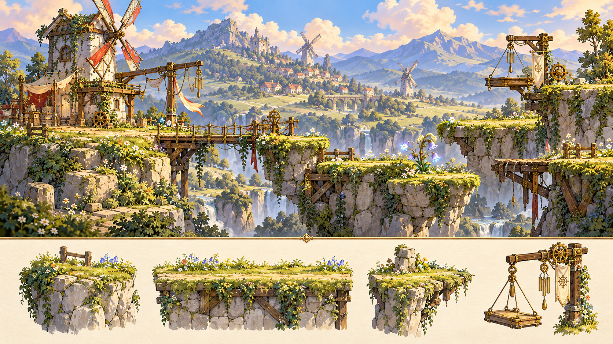核心特色：嫩绿草甸、木桥、风车、风铃花与柔和阳光材质与光：嫩草绿、麦金与天空蓝；石灰岩、旧木和少量磨损黄铜；暖日光、冷远山与低对比云影。平台方向：草坡、断桥、风车吊台、维修站四种场景族；落脚边整洁，远景风车不能误作可交互机关。我的审核 待审核认可，作为后续风格输入局部修改重新设计
02 · 荆棘森林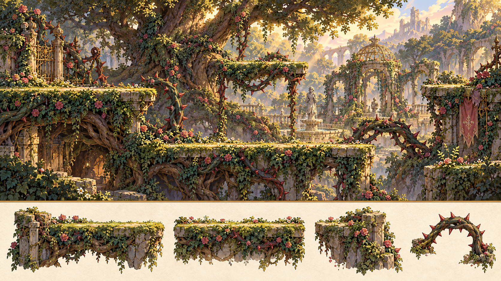核心特色：巨树、藤蔓、被吞没的皇家花园材质与光：深叶绿、浅苔绿与少量旧玫瑰色；树皮、苔石、锈铁；树冠漏光，危险枝刺有独立锐边。平台方向：根下通道、枝间露台、被吞没庭院；枝台和背景枝条的对比与边缘明确区分。我的审核 待审核认可，作为后续风格输入局部修改重新设计
03 · 萤雾沼泽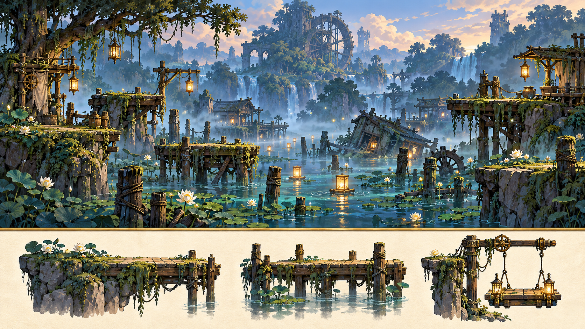核心特色：蓝绿薄雾、荷叶、木桩与漂流灯笼材质与光：蓝绿水雾、暗青与少量暖灯；湿木、荷叶、淤泥与水蚀石；水面反光保持弱于交互物。平台方向：水道木栈、荷塘、半沉房屋；水位和浮沉机制未实现前仅作背景，不出现假可站叶片。我的审核 待审核认可，作为后续风格输入局部修改重新设计
04 · 风蚀峡谷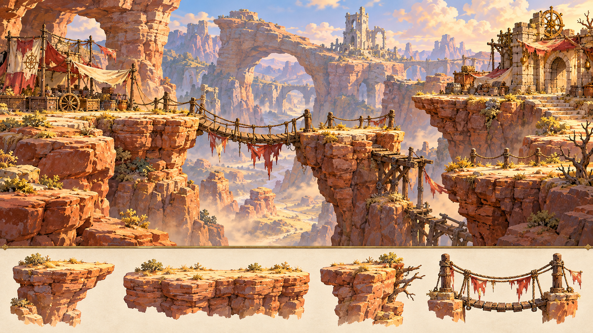核心特色：暖色砂岩、吊桥、散落商队货物材质与光：砂金、陶赭与冷青远壁；风蚀砂岩、绳索、褪色布；侧向光强调岩层与高差。平台方向：峡谷口、吊桥残段、旧驿站；背景风向不宣称已实现推力，桥索不遮平台。我的审核 待审核认可，作为后续风格输入局部修改重新设计
05 · 蕈灯地穴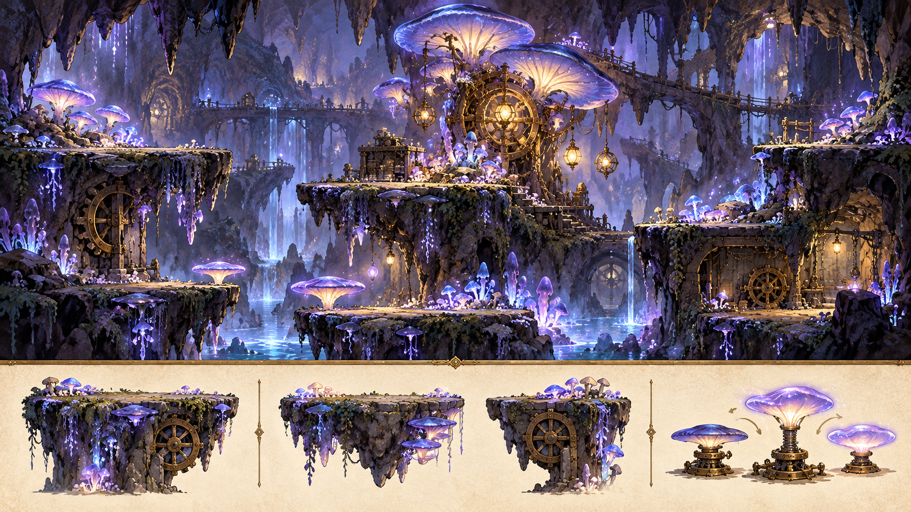核心特色：蓝紫发光菌群、柔软地下洞穴材质与光：蓝紫、灰褐与微量奶金；湿岩、菌盖、菌丝；局部柔光，站立面保持稳定明暗。平台方向：菌丛台阶、窄洞、旧维修腔室；发光道路与资源光分离，孢子不过量遮挡动作。我的审核 待审核认可，作为后续风格输入局部修改重新设计
06 · 沉水遗迹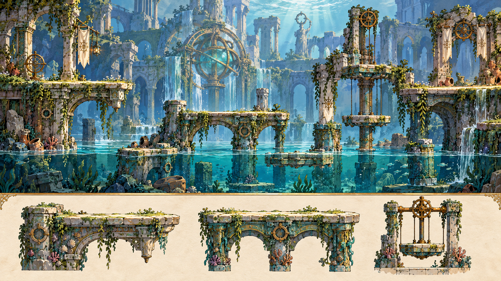核心特色：青蓝水体、苔藓石柱与旧符号材质与光：青蓝、灰白与氧化铜绿；水蚀石、铜环、碎陶；柔和水面反射与透入的天光。平台方向：柱廊、干燥检修台、半沉实验腔；水下景物不暗示已开放潜水动作。我的审核 待审核认可，作为后续风格输入局部修改重新设计
07 · 齿轮工城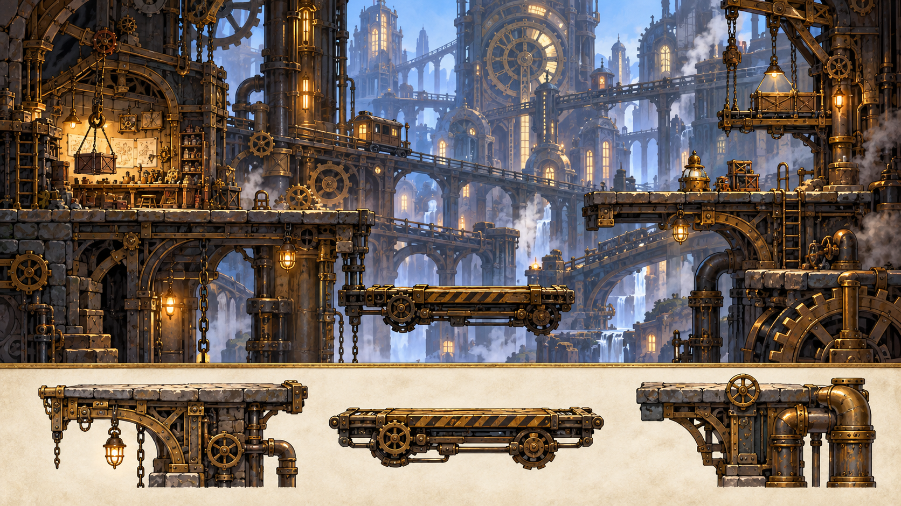核心特色：黄铜、管道、齿轮与无人车间材质与光：旧黄铜、炭灰与冷蓝窗光；磨损金属、玻璃、油渍木；光源集中于工位和检修节点。平台方向：生产廊、检修井、轨道交汇；环境齿轮低对比，伤害锯轮有清晰外缘，禁止以装饰变更周期。我的审核 待审核认可，作为后续风格输入局部修改重新设计
08 · 月冠古堡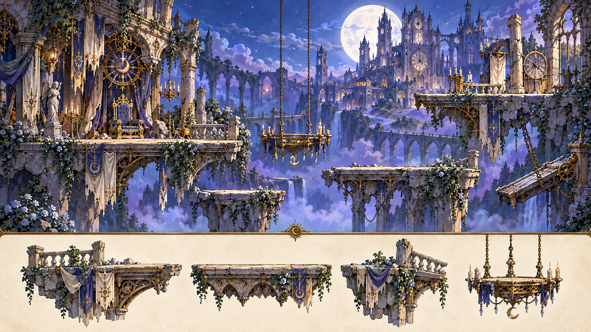核心特色：蓝紫月光、破损阳台、吊灯与空王座材质与光：月蓝、淡紫、象牙白与旧金；石雕、织物、银镜、鎏金；冷月光与少量熄灭后的暖色残迹。平台方向：外墙阳台、吊灯厅、钟表廊、王座前庭；宫殿细节留在背景，危险与平台保持独立层次。我的审核 待审核认可，作为后续风格输入局部修改重新设计
09 · 月影墓园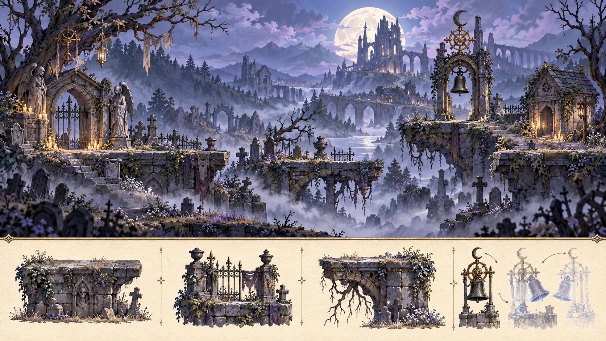核心特色：冷色月光、墓碑、幽灵与柔雾材质与光：银灰、灰紫与少量幽蓝；旧石、枯草、黑铁；低位薄雾与清晰近景边缘。平台方向：墓道、门庭、守墓小屋、钟亭；剧情幽光不使用补充物形状，显隐机制须独立验证。我的审核 待审核认可，作为后续风格输入局部修改重新设计
10 · 霜镜冰川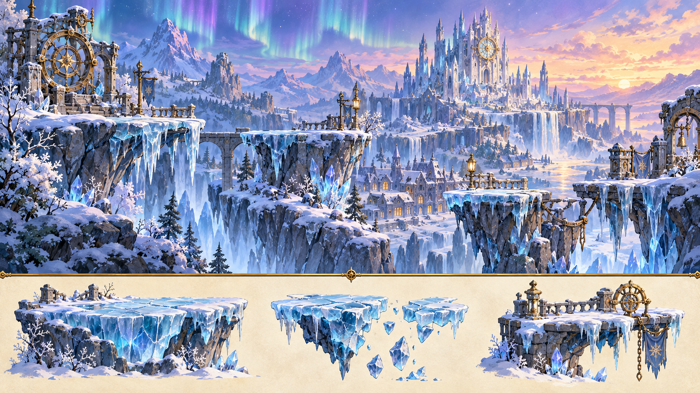核心特色：冰蓝悬崖、极光与冻结城镇材质与光：冰蓝、珍珠白与少量暮紫；分层冰、霜木、结晶石；透光与裂纹光有节制。平台方向：冰崖、冻结街道、裂谷、封存广场；可站冰面边缘清楚，低摩擦/落冰并非自动启用。我的审核 待审核认可，作为后续风格输入局部修改重新设计
11 · 熔火腹地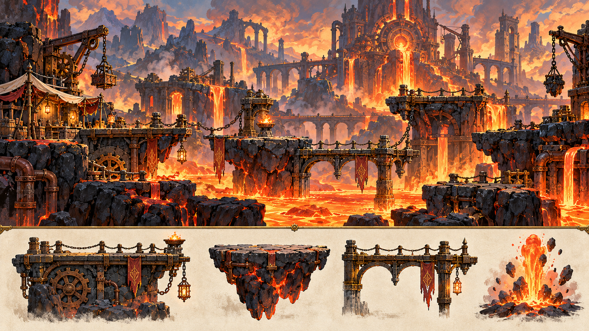核心特色：橙红熔岩、玄武岩与失控熔炉材质与光：炭黑、锈红、熔金与少量冷灰；玄武岩、炉砖、烧蚀金属；局部热光与克制热扰动。平台方向：炉边维修廊、冷却桥、管道井；装饰火星不混同危险弹体，热浪不扭曲落脚边。我的审核 待审核认可，作为后续风格输入局部修改重新设计
12 · 破碎浮岛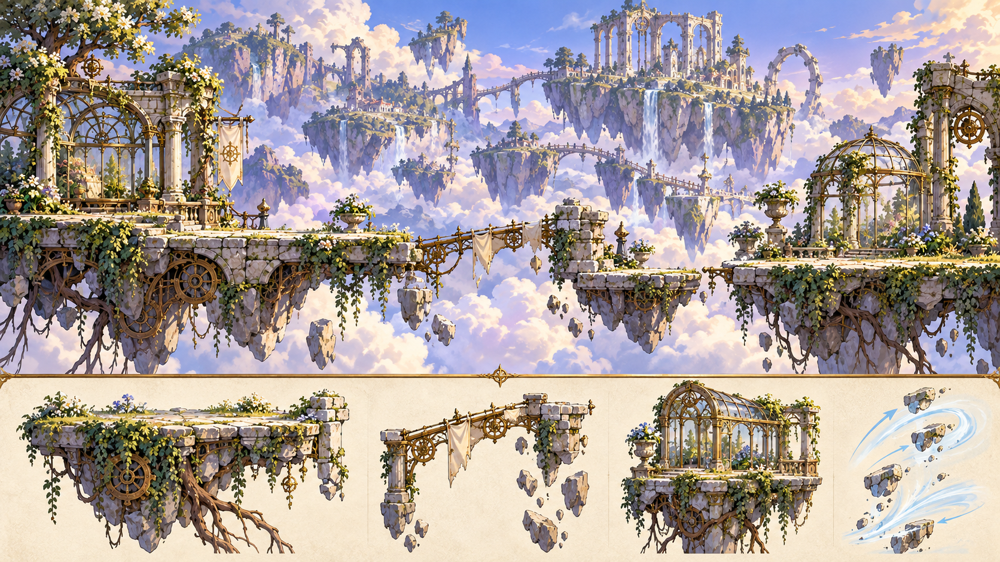核心特色：云海、紫蓝天空、残存空中花园材质与光：淡云白、天空紫蓝与浅绿；碎石、根系、花园铁艺；明亮大气透视与岛体暗面。平台方向：碎庭院、残桥、漂流温室；视觉漂浮不改变重力，云形不暗示未实现落脚面。我的审核 待审核认可，作为后续风格输入局部修改重新设计
13 · 根脉圣殿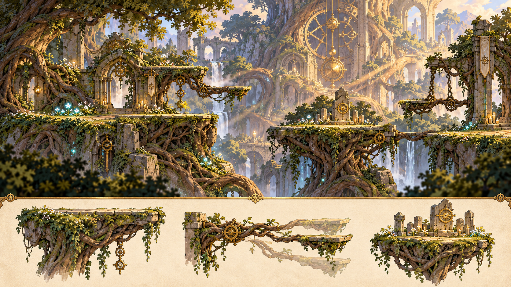核心特色：巨型树根、生命光点与自然祭坛材质与光：深根褐、苔绿与柔金；根皮、古石、少量铜环；沿根脉的局部光与安静暗区。平台方向：根廊、祭坛台、脉冲汇流处；生命光保持克制，不能代替安全锚点或授予资源。我的审核 待审核认可，作为后续风格输入局部修改重新设计
14 · 逆时钟塔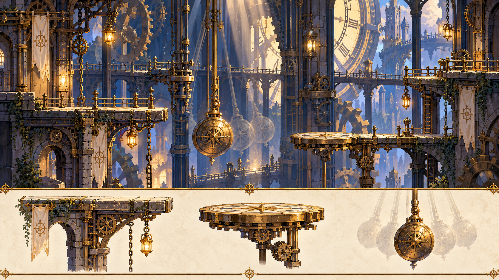核心特色：钟针、摆锤、巨大齿轮与时间残影材质与光：深靛、旧黄铜与象牙钟盘；金属、玻璃、磨损石阶；竖向光束、可辨的机械轮廓。平台方向：摆锤井、检修回廊、钟盘背面；纵向镜头覆盖独立设计，残影不模拟当前机关碰撞。我的审核 待审核认可，作为后续风格输入局部修改重新设计
15 · 星桥天门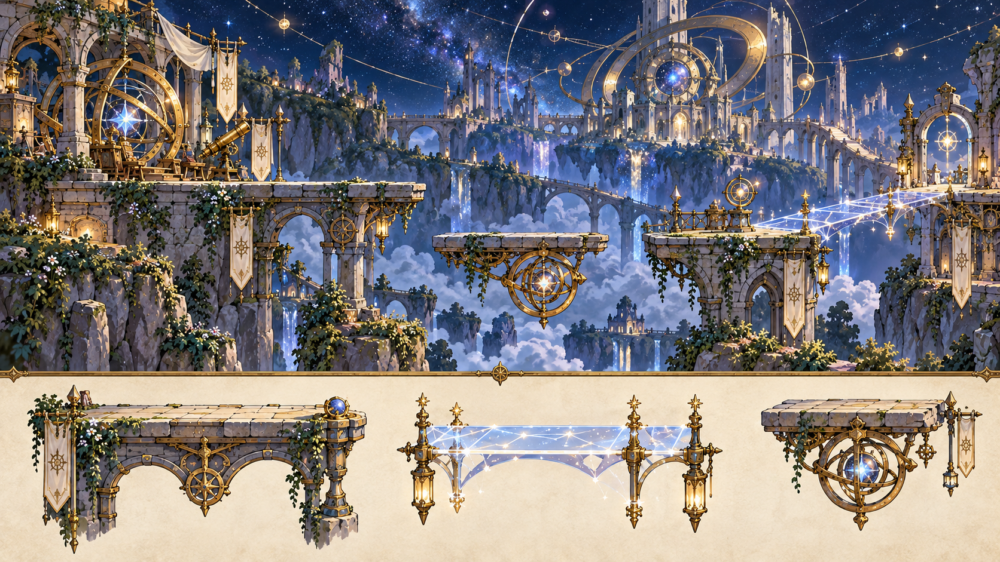核心特色：星空、悬桥、天文环与光路材质与光：夜蓝、银白与少量星金；淡石、天文铜环、玻璃；稀疏星光和稳定可读的光边。平台方向：观测台、天文环、星桥前庭；发光桥只在行为实现时成为站立面，低重力继续候选。我的审核 待审核认可，作为后续风格输入局部修改重新设计
16 · 世界钟心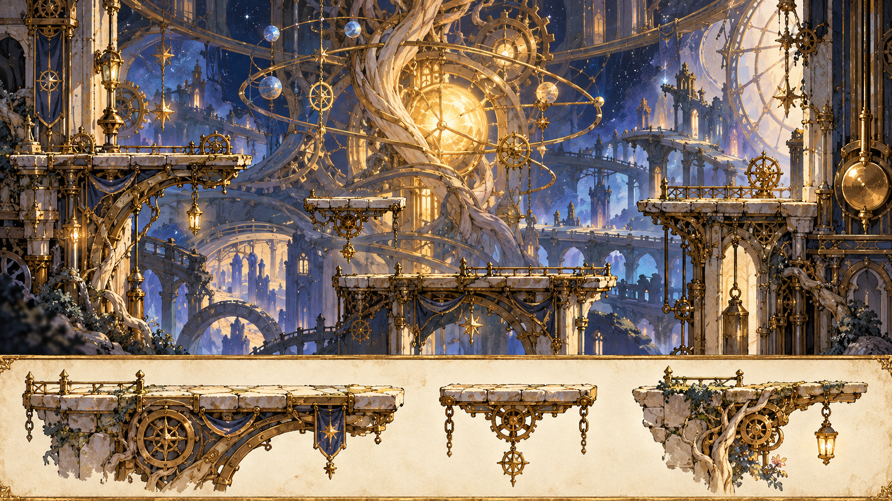核心特色：巨钟内部与本局经过地区的残影材质与光：象牙、旧金、深夜蓝，少量本局地区色；同源金属与光脉；中心聚光、外围低对比回响。平台方向：核心检修环、钟心前庭、终局场；只引用本局已学机制，残影不叠成所有地区背景和危险。我的审核 待审核认可，作为后续风格输入局部修改重新设计